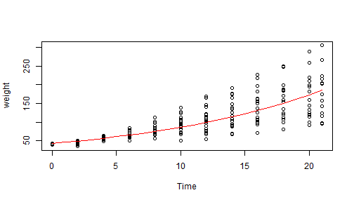

This shiny app allows predicts the weight of a chick with respect to its age in days and its experimental diet. It is based on the ChickWeight R dataset.
The app is available at : https://djuls-nyc.shinyapps.io/shiny/

djuls-nyc
This shiny app allows predicts the weight of a chick with respect to its age in days and its experimental diet. It is based on the ChickWeight R dataset.
The app is available at : https://djuls-nyc.shinyapps.io/shiny/
myData <- ChickWeight
myData$logWeight <- log(myData$weight)
verifData <- data.frame(Time=as.numeric(0:21))
mod1 <- lm(logWeight~Time, data = subset(myData, Diet=="1"))
w1 <- exp(predict(mod1, newdata = verifData))
plot(weight~Time, data = subset(myData, Diet=="1"))
points(x=verifData$Time, y=w1, pch=21, col="red", type="l" )
